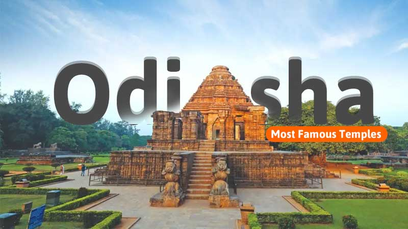
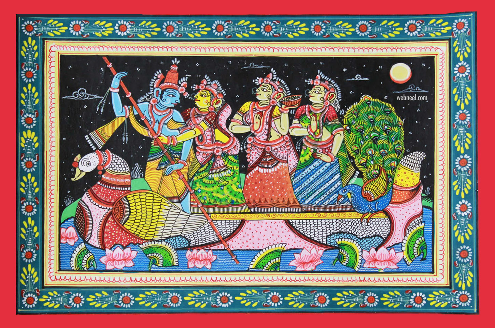

Introduction

Odisha, state of India. Located in the northeastern part of the
country, it is bounded by the states of Jharkhand and West Bengal to the
north and northeast, by the Bay of Bengal to the east, and by the states
of Andhra Pradesh and Telangana to the south and Chhattisgarh to the
west.
Geographical Landscape
Odisha, formerly known as Orissa, is a culturally rich state located in
the eastern part of India. It is renowned for its lush green landscapes,
extensive coastline, and a plethora of tribal cultures. The state is
surrounded by West Bengal to the northeast, Jharkhand to the north,
Chhattisgarh to the west and northwest, and Andhra Pradesh to the south.
Climate
The higher elevations of the hills provide some relief from the summer
heat, which becomes particularly oppressive in the basins of the central
tract. Average annual rainfall in the state is about 60 inches (1,500
mm), mostly occurring during the months of the southwest monsoon (June
through September).
Plant and animal life
tropical moist deciduous and tropical dry deciduous. The first type
occupies the hills, plateaus, and more-isolated areas within the
northeastern part of the state, while the second is found in the
southwest. From northeast to southwest, the density of forest cover
generally decreases. Bamboo grows in both forest types, as do tropical
hardwoods, such as teak, rosewood, and padauk.
Cultural Heritage
The cultural heritage of Odisha is deep-rooted in its classical music,
dance, drama, and art. Odissi, one of the oldest surviving dance forms
of India, originated in Odisha. The state’s art and architecture are
prominently reflected in the ancient temples of Bhubaneswar, Puri, and
Konark, famously known as the “Golden Triangle” of eastern India.
Economy and Industry
Primarily an agrarian economy, Odisha is also rich in mineral resources
like coal, bauxite, and iron ore, making it a significant player in
India’s industrial sector. The state has made substantial progress in
sectors such as steel, aluminum, power, refineries, and ports,
contributing significantly to its economic development.
Art and Architecture

the culture of Odisha showcases a myriad number of Temples and
monuments.These temples are a living proof the exquisite architecture of
the region. The early monuments date back to the third century B.C. The
remnant of an Ashokan pillar, turned into a Siva Lingam and enshrined in
the Bhaskaresvara temple at Bhubaneswar and the lion capital of an
Ashokan pillar, presently in the State Museum, speak volumes of Odishas
past glory.
Government and politics
The main parties active in the politics of Odisha are
- Biju Janata Dal
- Indian National Congress
- Bharatiya Janata Party
Industrial development

Odisha has abundant natural resources and a large coastline. Odisha has
emerged as the most preferred destination for overseas investors with
investment proposals.It contains a fifth of India's coal, a quarter of
its iron ore, a third of its bauxite reserves and most of the chromite.
Rourkela Steel Plant was the first integrated steel plant in the public
sector in India, built with collaboration of Germany.
Conclusion
Odisha, with its rich history, cultural heritage, architectural marvels,
and natural beauty, is a state that captivates the heart and mind. Its
economic potential, coupled with its diverse resources, positions it as
an important state in India’s growth story.